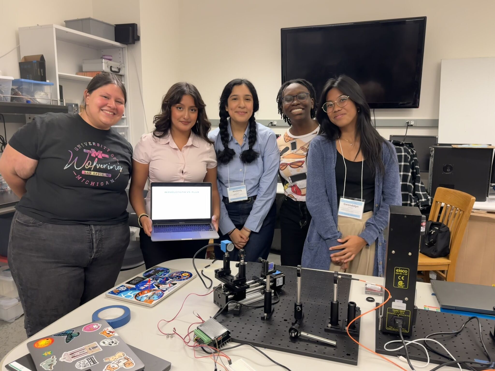

Exoplanet Habitability Evolution
Modeled the long-term habitability of icy satellites, with attention to how major changes in stellar radiation affect subsurface environments and possible temporary habitability.
CERN CMS Upgrade & Testing
Tested and graded semiconductor chips for the CMS Inner Tracker upgrade and investigated anisotropic resistance in carbon fiber materials.
Spectroscopy
Built and aligned a complete spectrograph system, including optical calibration and instrumentation setup for exoplanet-related spectroscopy.

Research Interests
I am especially interested in planetary environments that change over time, including how atmospheres, interiors, surfaces, radiation, and climate feedbacks influence habitability.
Topics
- Planetary atmospheres
- Climate and habitability evolution
- Icy worlds and subsurface environments
- Geophysical processes
- Astronomical instrumentation